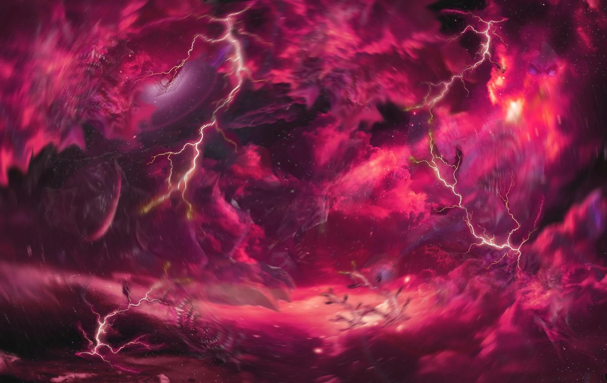
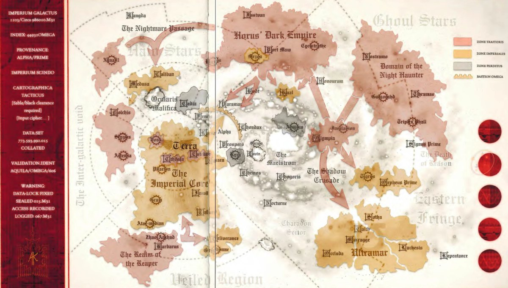

Ruinstorm
| Ruinstorm | |
|---|---|
| Warp storm of the Horus Heresy | |
 The night sky of an Eastern Fringe world under the Ruinstorm, from an Imperial Army field sketch | |
| Type | Warp storm |
| Raised | 007.M31, at the Battle of Calth |
| Raised by | Erebus, on behalf of Lorgar and the Word Bearers |
| Extent | Most of the Ultima Segmentum and the Eastern Fringe, with outlying disturbances across much of the galaxy |
| Anchor | Davin (by the later years of the war) |
| Weakened | c. 011.M31, after the Second Battle of Davin |
| Dissipated | 014.M31, after the death of Horus |
| Effects | Isolation of Ultramar, the Blood Angels and the Dark Angels; failure of astropathic communication; occlusion of the Astronomican; daemonic incursions |
| Consequences | Imperium Secundus; absence of three loyal Legions from most of the Siege of Terra |
The Ruinstorm was a vast Warp storm that divided the galaxy during the Horus Heresy. It was raised in 007.M31 by the Dark Apostle Erebus in a rite performed on the surface of Calth during the Battle of Calth, at the command of the Word Bearers primarch Lorgar. It grew through the years that followed, fed by the slaughter of Lorgar's Shadow Crusade, until it covered most of the eastern half of the galaxy. Within it, Warp travel became perilous and often impossible, astropaths could not send or receive, and the light of the Astronomican could not be seen.[1][2]
The storm was a weapon of the Warmaster Horus. It kept the Ultramarines, the Blood Angels and the Dark Angels, three of the strongest loyal Legions, away from Terra while the traitors advanced on the Throneworld. The traitors themselves could pass through it by routes known to the Word Bearers. Cut off from the Emperor, Roboute Guilliman founded the Imperium Secundus at Macragge. The storm began to fail after the three loyal primarchs destroyed Davin, its anchor, in about 011.M31, and it dispersed entirely after the death of Horus at the end of the Siege of Terra.[1][3]
Origin
[edit]The rite at Calth
[edit]The Ruinstorm was planned long before it was raised. The Word Bearers had turned to the worship of the Ruinous Powers decades before the Heresy, and Lorgar's First Chaplain Erebus and First Captain Kor Phaeron designed the attack on the Ultramarines at Calth as both a military blow and a great sacrifice. While the fleets fought above the planet, Erebus and a party of Gal Vorbak and cultists went to the Satric Plateau. There they had laid a circle of black stones taken from the slopes of Isstvan V. Into it they brought stasis flasks holding gene-seed of every Legion that had fought at the Drop Site Massacre, loyal and traitor.[2]
The rite drew on the deaths of the battle above and below, and on the death throes of the Veridian star, which the Word Bearers bombarded with Calth's own orbital weapons until it flared and stripped the planet's atmosphere. When Erebus completed the rite, the Warp, which had been uneasy for a year, broke into a storm. It closed round the Veridian System within hours and spread outward over the Eastern Fringe.[1][2]
Growth
[edit]The storm did not reach its full extent at once. The Shadow Crusade of the Word Bearers and World Eaters across Ultramar in 007–008.M31 was conducted in part to feed it. Millions died on worlds such as Armatura and Nuceria, and their deaths were offered to the Ruinous Powers. Imperial scholars of the Warp hold that the storm grew in proportion to the suffering it fed on, and by 009.M31 it had cut the galaxy in two.[1][4]

Nature and effects
[edit]In the Warp
[edit]Within the Ruinstorm the currents of the Warp were violent and unpredictable. Ships that attempted to cross it were scattered, lost, or thrown out of the Warp years after they had entered. Navigators could not see the Astronomican through it, so that long jumps were made blind. Astropaths who tried to send messages across it went mad, died, or found their messages answered by voices that were not human. In practice the Imperium was divided into two halves that could not speak to each other.[4][2]
The traitors were not bound in the same way. Lorgar and his sons had been shown paths through the storm by the powers they served, and Word Bearers and other traitor fleets could cross it when loyal fleets could not. Horus made use of this to move his forces while his enemies were stranded.[1]
In realspace
[edit]Though the storm existed mainly in the Warp, it bled into the material universe on many worlds. People saw the stars swallowed, or the sky filled with colours and shapes that seemed drawn from old religious images of damnation. On the worst-affected worlds the barrier between realspace and the Warp failed and daemons walked in numbers. Many of the first encounters of the Legiones Astartes with daemons took place under the Ruinstorm, often among small detachments far from the main war, who had no doctrine and no knowledge for fighting such things.[2][4]
The orphaned forces
[edit]The storm broke the chain of command of every Legion with forces in the east. Detachments that had been sent to distant campaigns could neither report nor receive orders. Some remained loyal and held the worlds where they were stranded. Others lost all knowledge of the war and had to decide their allegiance for themselves when they learned of it. Imperial historians who later tried to reconstruct the disposition of the Legions in these years concluded that a full account is impossible. Many actions fought under the Ruinstorm are known only from the survivors, and many from none.[2]
The isolated Legions
[edit]Ultramarines
[edit]The Ultramarines were the first and worst affected. After Calth they spent 007 and 008.M31 driving the Shadow Crusade out of Ultramar, with no word from Terra and no means of sending any. Guilliman could not tell whether the Emperor lived. The Ultramarines' discovery of the Pharos, an ancient xenos device on the world of Sotha that cast a beacon in the Warp, allowed them to navigate within Ultramar and to guide others to Macragge. On this basis Guilliman founded the Imperium Secundus in about 009.M31.[1][5]
Blood Angels
[edit]The Blood Angels had been sent by Horus to the Signus Cluster, where they were drawn into a war with daemons in which much of the Legion died. The storm then kept them from Terra and from their homeworld of Baal. Blood Angels detachments that had never reached Signus were scattered across the Warp, and for nearly five years many believed themselves the last of their Legion. Sanguinius brought the main body of the Legion to Macragge by the light of the Pharos.[2][6]
Dark Angels
[edit]The Dark Angels spent the first years of the war fighting the Night Lords in the Thramas Crusade on the Eastern Fringe. After the Lion's victories there, many Dark Angels strike forces were sent out to hunt the scattered Night Lords, and a number never returned. The main fleet followed the Pharos to Macragge, where the Lion became Lord Protector of the Imperium Secundus.[2][7]
Terra
[edit]On Terra the storm meant blindness. The War Council of the Praetorian and the Regent could not learn the state of half the Imperium. The Council sent envoys and agents in person to learn the allegiance of distant worlds, knowing that most would not return. Many of those agents were the Sigillite's Knights-Errant.[1]
Breaking of the storm
[edit]Davin
[edit]By the time the Imperium Secundus was dissolved, the storm had come to centre on Davin, the world where Horus had been corrupted in 004.M31. The three primarchs at Macragge, Sanguinius, Lion El'Jonson and Guilliman, led their Legions through the storm toward it. They found Davin turned into a daemon world. After fighting on its surface and in the skies above it, they destroyed the planet with cyclonic torpedoes. The destruction of Davin tore a breach in the Ruinstorm, through which a route to Terra lay open.[1][2]
The blockade
[edit]Horus had foreseen the breach and had placed a traitor fleet across the route. Guilliman and the Lion engaged the blockade, and Sanguinius took the whole of the Blood Angels Legion straight for Terra, as his visions had told him he must. He arrived in time to take part in the defence of the Throneworld. The Ultramarines and Dark Angels, delayed by the blockade and the remains of the storm, reached the Sol System only in the closing hours of the siege.[1][3]
Dissipation
[edit]After Davin the storm weakened steadily. On Terra, Rogal Dorn came to believe that the Ultramarines might arrive in time, and the threat of their coming weighed on the Warmaster's plans throughout the siege. In the final days, word that the fleets of Guilliman, the Lion and Leman Russ were only hours from Terra and needed the light of the Astronomican to guide them forced Horus to seek a decision. He lowered the shields of the Vengeful Spirit to draw the Emperor aboard. After the Warmaster's death the Ruinstorm, deprived of the champion whose cause it served, dissipated over the following months.[3][1]
Legacy
[edit]The Ruinstorm shaped the end of the Heresy as much as any battle. It kept three loyal Legions away from Terra for most of the war, which allowed the traitors to fight the Imperial Fists, White Scars and Blood Angels alone in the Palace. It led directly to the founding of the Imperium Secundus, an episode that Guilliman later regretted. Its isolation of the Dark Angels has been held to have given Luther the opportunity to turn Caliban against the Lion.[1][7]
Imperial scholars of the Warp have compared the Ruinstorm with the Great Rift of the 41st millennium, which divided the galaxy in a similar way and cut off the Imperium Nihilus from Terra. The comparison was drawn by Guilliman himself after his return. The Rift is larger and has proved far more lasting, but in both cases a deliberate act of the servants of Chaos split the Imperium and left its halves to fight alone.[8]
See also
[edit]References
[edit]- ^ a b c d e f g h i j k Chronicles of the Heresy (sealed). Logos Historica Verita, Terra.
- ^ a b c d e f g h i Lexicanum Martialis. Officio Militaris.
- ^ a b c The Last Day of the Siege (sealed). Logos Historica Verita, Terra.
- ^ a b c On the Tempests of the Immaterium (M36). Navis Nobilite, Terra (restricted).
- ^ Vigil Opertii (c. 011.M31). Dispatches of the Lord Warden (sealed). Fortress of Hera, Macragge.
- ^ The Book of the Imperator Regis (M31). Reclusiam of the Arx Angelicum, Baal.
- ^ a b A Reckoning of the Lord Protector (M32). Archives of the First Legion (restricted).
- ^ Records of the Indomitus Crusade (ongoing). Office of the Lord Commander.